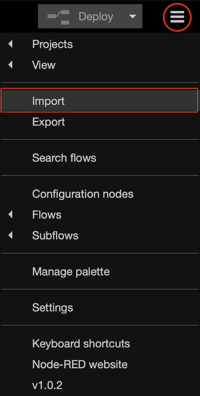
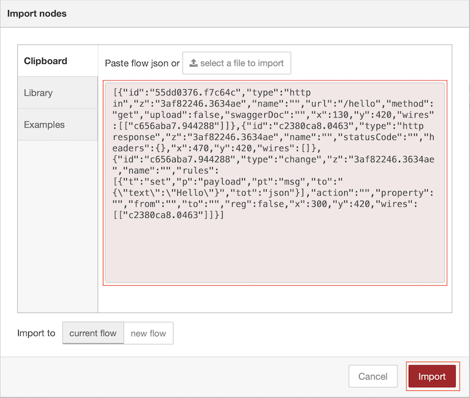

Packaging Node-RED apps in containers¶
In this tutorial you will learn how to package a Node-RED application into a container and customise the runtime for production running rather than application creation
Learning objectives¶
In this tutorial, you will learn how to:
- Identify the dependencies for a Node-RED application
- Customise the Node-RED runtime for production use
- Build a multi-architecture container for a Node-RED application and push it to a container registry
- Run a containerised Node-RED application
The video below shows the instructor completing the tutorial, so you can watch and follow along, or skip the video and jump to the prerequisites section.

Prerequisites¶
To complete this tutorial, you need:
- some experience of using Node-RED
- a laptop/workstation running an up to date version of Linux, Mac OS or Windows
- an up to date version of Docker on your laptop/workstation (version 19.03 or higher should be returned by the
docker versioncommand) - An active Docker ID to be able to sign into dockerhub
- a github account
- git tools installed on your laptop/workstation
- Completed tutorial Version Control with Node-RED and have the forked template repository in your github account, which is also cloned within a Node-RED project on your laptop/workstation
Estimated time¶
You can complete this tutorial in less than 20 minutes.
Steps¶
Step 1. Dependencies¶
Containers are becoming the standard way to package, distribute and deploy applications for modern cloud based environments. Increasingly containers are also being used to distribute and manage workloads in edge of network scenarios.
X86_64 is the predominant CPU architecture in use today in public cloud, but there are also Open Power and S390 systems being used in infrastructures running many large businesses. At the edge there are also ARM32 and ARM64 systems, so in this tutorial you will build a multi-architecture container, allowing your containers to run on multiple different architectures.
The 12-factor app dependency rule is to Explicitly declare and isolate dependencies
For a Node-RED application all dependencies are specified in the package.json file. When adding additional nodes to the Node-RED pallet, ensure they are added to the package.json.
However, there are still 'hidden' dependencies that can creep into a project when a package has some native dependencies that need to be installed in the host system running the application.
To get round this the starter project has a Dockerfile which will build the application from the source code and package it into a container. The Dockerfile captures all hidden dependencies.
The provided Dockerfile in the starter project initially creates a build container to build the required software, then creates an applications image, copying built content from the build container. This way a fully defined build environment is created and used, but the build tooling is not part of the production container image.
The runtime files in the starter project have been modified to allow the application to be better managed in the cloud. Additional endpoints (/live, /ready and /health) have been added to allow a cloud environment to verify the state of the running container. The editor has also been moved to the /admin endpoint. In a production environment the editor should be disabled, but for this tutorial it has been left active to allow you to examine the Node-RED runtime running in the container.
In this tutorial the new buildx Docker feature is used to make it easier to create and push multi-architecture containers.
Step 2. Extend the application¶
Before building the app we will add another few nodes to add a Web endpoint, so we can test an app when we have Node-RED deployed in Docker.
- Start Node-RED, if not already running:
- run
docker ps -ato see what is running - if mynodered container instance exists, but is not in state up, then run command
docker start mynodered - if mynodered container instance does not exist then run the appropriate command (replacing YOUR-USERNAME with your own username):
- Windows:
docker run -itd -p 1880:1880 -v c:\Users\YOUR-USERNAME\NRdata:/data -e NODE_RED_ENABLE_PROJECTS=true --name mynodered nodered/node-red - Mac OS:
docker run -itd -p 1880:1880 -v /Users/YOUR-USERNAME/NRdata:/data -e NODE_RED_ENABLE_PROJECTS=true --name mynodered nodered/node-red - Linux:
docker run -itd -p 1880:1880 -v /home/YOUR-USERNAME/NRdata:/data -e NODE_RED_ENABLE_PROJECTS=true --name mynodered nodered/node-red
- run
-
Import the following JSON to add the /hello endpoint:
- to import the flow select the main menu (☰), then the import option from the menu 
- copy and paste the JSON below into the Import nodes window, then press the Import button to import the nodes 
[{"id":"55dd0376.f7c64c","type":"http in","z":"3af82246.3634ae","name":"","url":"/hello","method":"get","upload":false,"swaggerDoc":"","x":130,"y":420,"wires":[["c656aba7.944288"]]},{"id":"c2380ca8.0463","type":"http response","z":"3af82246.3634ae","name":"","statusCode":"","headers":{},"x":470,"y":420,"wires":[]},{"id":"c656aba7.944288","type":"change","z":"3af82246.3634ae","name":"","rules":[{"t":"set","p":"payload","pt":"msg","to":"{\"text\":\"Hello\"}","tot":"json"}],"action":"","property":"","from":"","to":"","reg":false,"x":300,"y":420,"wires":[["c2380ca8.0463"]]}]-
press the Deploy button to make the new nodes live (you can now access the new endpoint running on your local Node-RED instance http://localhost:1880/hello.
Note
This web endpoint generates a JSON response. Most browsers can display JSON content, but not all can without having a plugin installed. If you get prompted to install a plugin you can choose to install one, or just take the request as validating that the endpoint worked*
-
Commit and push the change to git
- switch to the git side panel
- stage the change to the flows.json
- commit the change
- switch to the Commit History section of the side panel
- click the up arrow to open the Manage remote branch popup
- push the change to the server
Step 3. Configure the builder and build the application¶
In this tutorial we will use the new buildx feature of Docker. At the time of writing this content it is an experimental feature in Docker, so experimental features need to be enabled in Docker to get access to buildx:
-
Enable buildx in Docker:
- Linux
-
Environment variable DOCKER_CLI_EXPERIMENTAL should be set to enabled
This can be done on the command line, or added to your .profile or active config file sourced when a new login shell is launched:
export DOCKER_CLI_EXPERIMENTAL=enabled -
To build multi-architecture images on Linux, architecture emulation needs to be added to Linux. This can be done by running the following command:
docker run --rm --privileged docker/binfmt:66f9012c56a8316f9244ffd7622d7c21c1f6f28d -
MacOS and Windows
- Start Docker if it is not running
- Click the Docker icon (usually in bottom notification popup on Windows, top menu bar on MacOS) and select settings or Preferences then the Command Line section
- Enable Experimental features
- Open a command or terminal window then navigate to the project directory:
- navigate to your home directory
- navigate to the NRdata/projects/Node-RED-Docker subdirectory within your home directory. This directory should contain the Dockerfile.
- Before you can build a container you need to create a new builder. Enter the command:
docker buildx create --name NRbuilder --use -
Inspect the builder with command :
docker buildx inspect --bootstrapwhich will also start the builder if it is not running. The output of this command will show the target architectures supported by the builder. 5. You can check you have a builder running using the ls command, which also outputs the list of supported architectures :
docker buildx ls -
Now the builder is up and running you can build a multi-arch container and push it to your dockerhub account. First ensure you are logged into dockerhub :
docker login -
Build and push the image :
docker buildx build --platform linux/amd64,linux/arm64,linux/arm/v7 -t YOUR-DOCKER-USERNAME/node-red-docker-sample --push .replace YOUR-DOCKER-USERNAME with your docker username. Here you see we are asking to build an image for 3 different architectures. AMD/Intel 64 bit, ARM 64bit and ARM 32bit v7 (Raspberry Pi 3/4). You can change to list of architectures to build as needed, e.g. adding additional architectures, such as linux/s390x to add support for IBM Z systems or linux/ppc64le for IBM POWER systems.
Warning
the more architectures you select to build, the longer the build takes. The list of architectures your build environment supports is provided in the output to the
`docker buildx lscommand.- the -t option is short for --tag which applies a tag to the container image in the registry
- to see all the options available when building an image use command
docker buildx build --help
-
Inspect the image using command (replace YOUR-DOCKER-USERNAME with your docker username):
docker buildx imagetools inspect docker.io/YOUR-DOCKER-USERNAME/node-red-docker-sample:latest -
Stop your local Node-RED
(we want to test the new container and will use the same Node-RED port of 1880, so can't have 2 applications listening on the same port):
docker stop mynoderedin a command line window, start your new container using command :
docker run -dit -p 1880:1880 --name dockerNR YOUR-DOCKER-USERNAME/node-red-docker-sample:latest -
Test your container.
- You will not be able to launch at the Editor on the base URL, as this has been modified in the sample project settings.js file. The editor can be launched at /admin. In a production Node-RED container you should not be able to alter the application, so the editor needs to be disabled. This can be achieved by setting the httpAdminRoot property in the settings.js file to false. Details of the Node-RED configuration options can be found in the Node-RED documentation.
- You should be able to access the /hello endpoint
- If you have a Raspberry Pi or other ARM 32-bit or ARM 64-bit system you can also test that the ARM containers also work.
Summary¶
In this tutorial you:
- Enabled experimental features in Docker to access the buildx command
- Created a new builder instance
- Created a multi-architecture set of containers and pushed them to dockerhub
- Inspected the created images
- Ran the newly created container on your local machine and optionally on a system with a different CPU architecture
Now you can create a Docker image containing your Node-RED application, but to make the container suitable for running in a cloud environment there is a further consideration needed to allow the cloud environment to provide configuration at runtime to the container, which is the subject of the next tutorial.